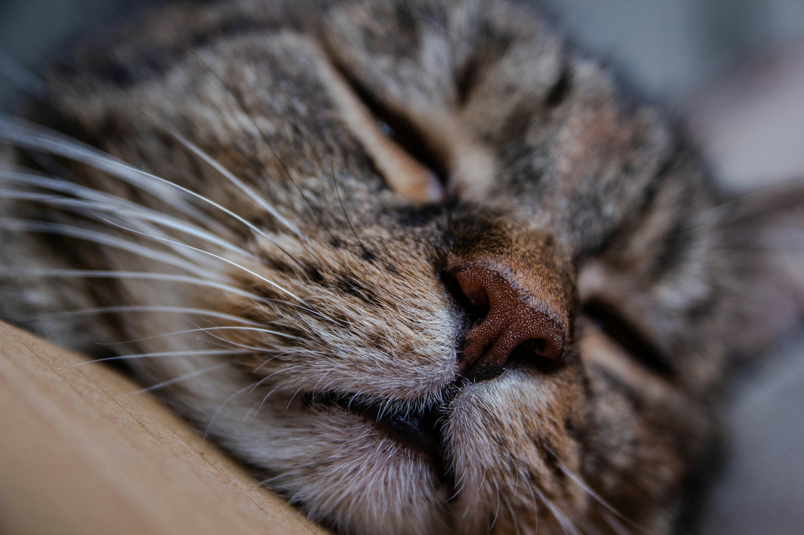
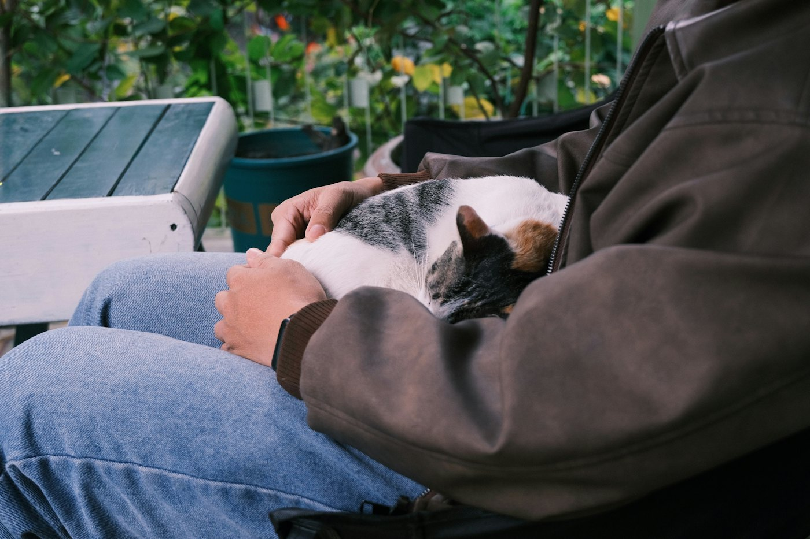
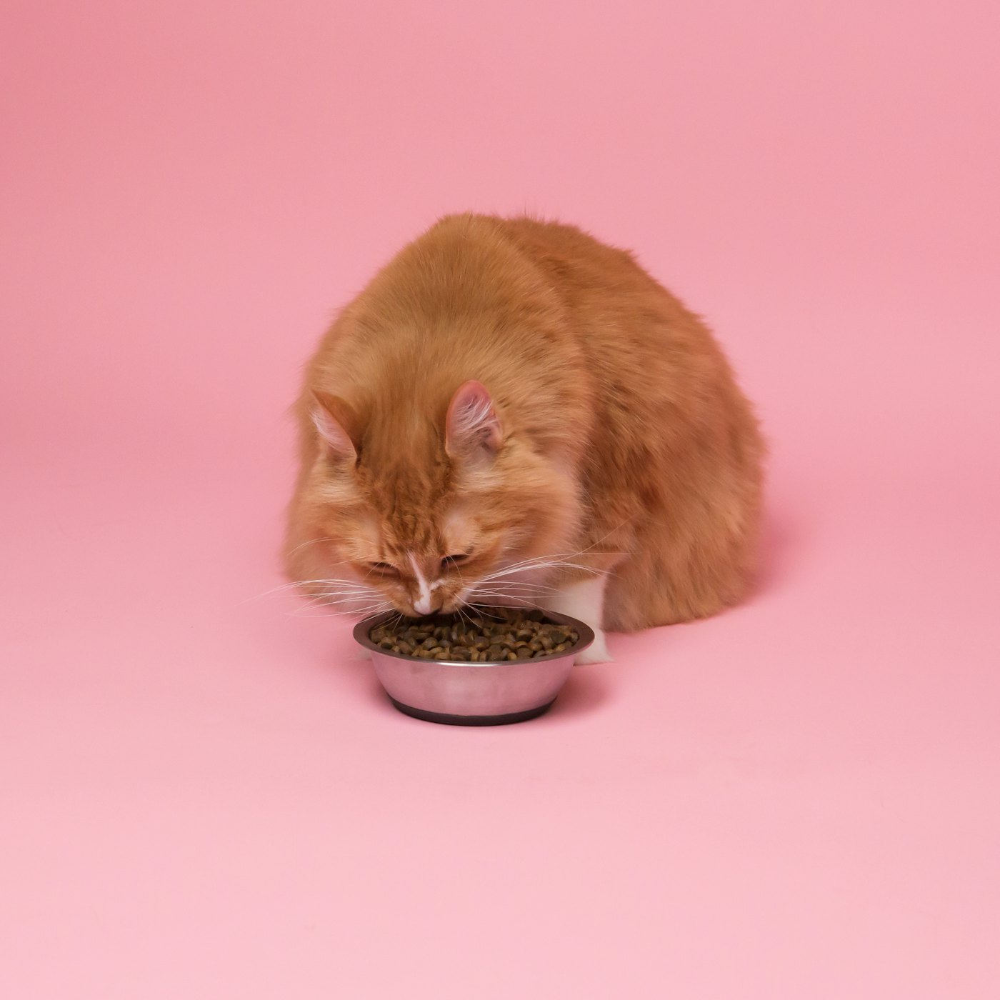
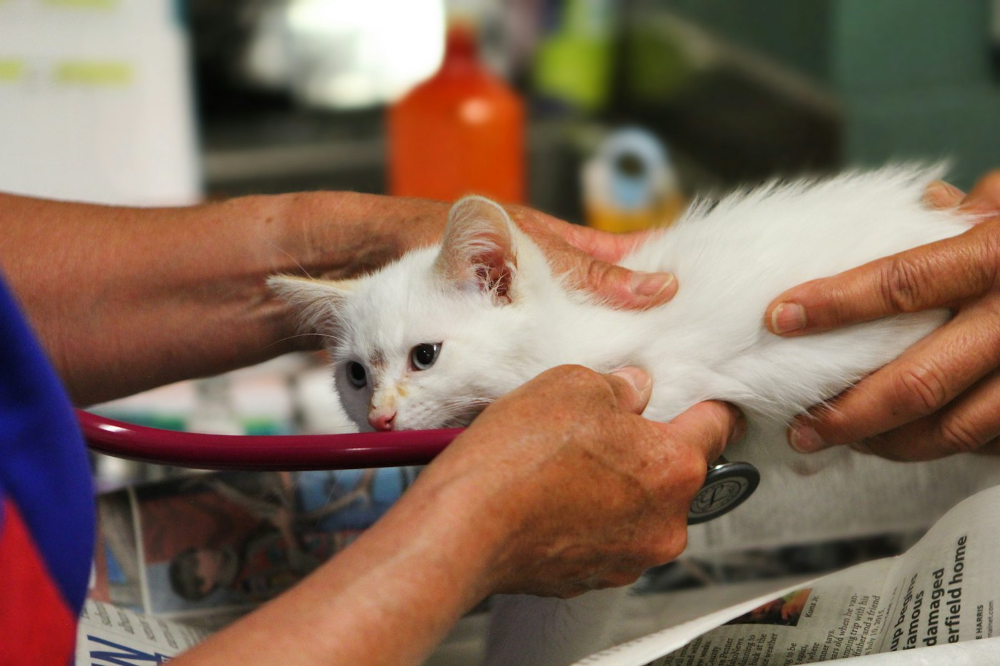
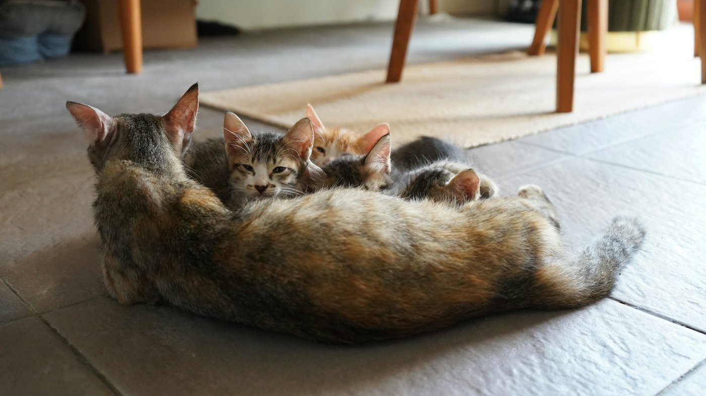
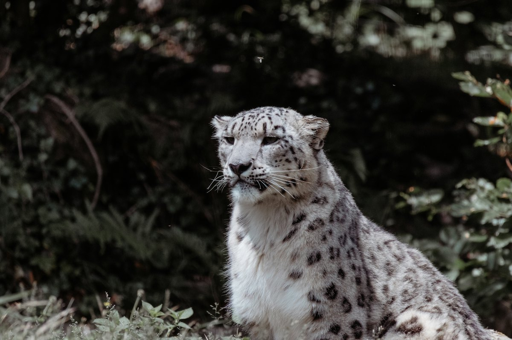
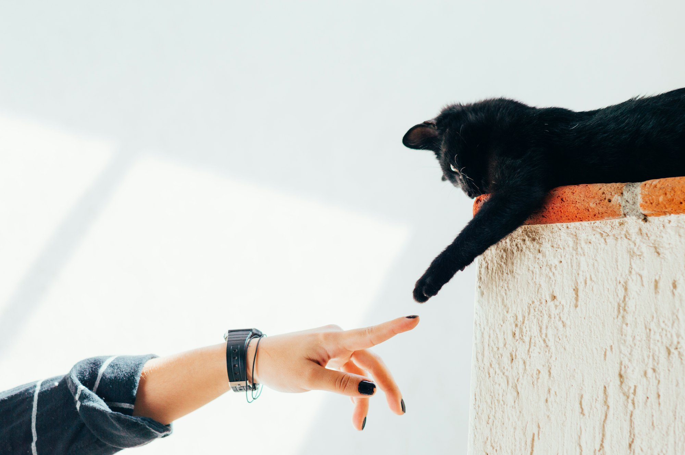

Положи ладонь на бок дремлющему коту, и почувствуешь ровное гудение, будто внутри работает крошечный холодильник. Этот звук знает каждый, кто хоть раз держал кошку на руках. Но как он получается и что кошка хочет им сказать, учёные выясняют до сих пор.
Разберёмся по порядку: сначала как, потом зачем, и в конце — кто ещё так умеет.
Пока ты читаешь эту страницу, голосовые складки мурчащего кота дрогнули бы уже 0 раз.
Где спрятан моторчик
Шаг 1
Ритм задаёт мозг
Всё начинается с команды. Мозг посылает быстрые сигналы мышцам гортани, то есть той части горла, где у нас рождается голос. Как дирижёр, который отбивает такт палочкой.
Шаг 2
Складки начинают дрожать
В гортани есть две голосовые складки. По сигналу они быстро сходятся и расходятся. В 2023 году учёные из Вены нашли в них мягкие «подушечки»: из-за них складки тяжелее и могут дрожать очень медленно, иногда даже без команды мозга.
Шаг 3
Работают и вдох, и выдох
Мы говорим только на выдохе. А кошка мурчит в обе стороны: воздух идёт внутрь — гудит, идёт наружу — тоже гудит. Поэтому мурчание льётся без пауз, как мотор на холостом ходу.
Шаг 4
Гудит вся кошка
Складки дрожат примерно 25–150 раз в секунду. Это очень низкий звук: его проще почувствовать ладонью, чем услышать. Как телефон на беззвучном, который жужжит в кармане.

Попробуй сам
Погладь кота
Зажми и проведи по фото мышкой или пальцем, как будто гладишь по шёрстке. Включи звук.
Кот дремлет
Зачем кошки мурчат
Мурчание — это не только «мне хорошо». Скорее это сигнал «побудь рядом» и способ себя успокоить. Вот пять причин, от самой очевидной до самой загадочной.

Мне хорошо
Тепло, гладят, никуда не надо идти. Самая известная причина, и с ней всё понятно.
Как у людейДовольный вздох, когда наконец садишься в любимое кресло.

Покорми меня
Утреннее мурчание у миски звучит иначе: в него вплетён тонкий звук, похожий на плач младенца. В эксперименте люди оценивали такое мурчание как более настойчивое — даже те, у кого никогда не было кошки.
Как у людейРебёнок просит вежливо, но так, что отказать невозможно.

Мне страшно
Кошки мурчат у ветеринара, когда им больно, и даже во время родов. Считается, что так они себя успокаивают. Поэтому мурчание — не всегда признак счастья: смотри ещё на позу и глаза.
Как у людейНапевать себе под нос, когда идёшь по тёмному подъезду.

Мама, я здесь
Котята рождаются слепыми и глухими, но мурчать начинают уже в первые дни жизни, часто во время кормления. Считается, что так малыши и мама сообщают друг другу: всё в порядке.
Как у людейДержать за руку того, кого не видишь в темноте.
Мурчать или рычать
Если упростить, кошки делятся на мурчащих и рычащих. Ровно мурчать на вдохе и на выдохе, как домашняя кошка, большие рычащие кошки не умеют. Что именно им мешает, учёные ещё спорят.

Если совсем коротко
- Мурчание рождается в горле: голосовые складки дрожат 25–150 раз в секунду.
- Кошка мурчит и на вдохе, и на выдохе, поэтому звук не прерывается.
- Мурчат не только от радости, но и чтобы попросить еды или успокоиться.
- Котята умеют мурчать почти с рождения, учить их не нужно.
- Гепарды и снежные барсы мурчат, а львы и тигры рычат.

В следующий раз, когда кот замурчит у тебя на коленях, ты будешь знать: внутри него работает крошечный моторчик.
И это не всегда «мне хорошо». Иногда это просто «побудь рядом».
Источники
- Венский университет: кошки мурчат иначе, чем считалось (Herbst и др., Current Biology, 2023)
- National Geographic: «плач» внутри просящего мурчания (McComb и др., Current Biology, 2009)
- Panthera: какие большие кошки мурчат
- Wikipedia: Purr
Фото: Roger Ce, Simion Andreea-Marina, Đào Việt Hoàng, Kabo, Judy Beth Morris, Maximus Beaumont, David Groves, Janis Ringli, Bro Takes Photos, Humberto Arellano — Unsplash.